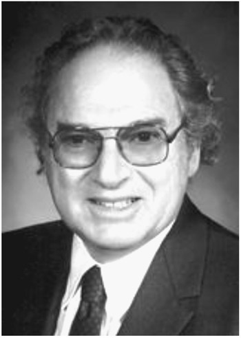
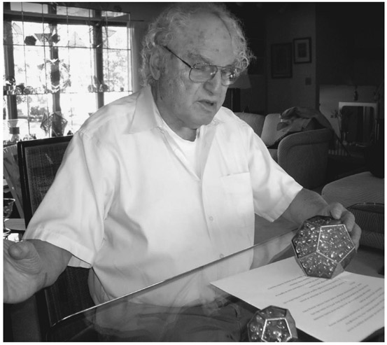
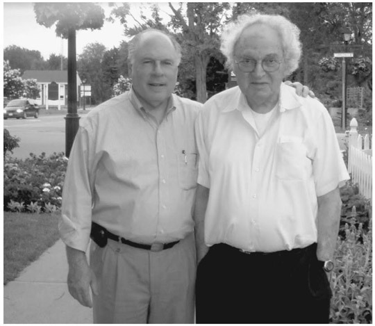

Herbert A. Hauptman: American (1917–2011)
The mathematician Herbert Aaron Hauptman enjoys the distinction of being the first mathematician to win the Nobel Prize—albeit the prize was for chemistry, since there is no Nobel Prize category set aside for mathematics. There are many stories as to why Alfred Nobel chose not to include mathematics among the categories of his prize. Yet the most common one is that there was a jealousy involving a woman and a competing mathematician. There are many variations and other rumors regarding reasons that there was no such prize in mathematics. However, after Hauptman had won the prize in 1985, other mathematicians have since been awarded a Nobel Prize, such as John Forbes Nash Jr. (1994) and Robert J. Aumann (2005).
Dr. Hauptman won the Nobel Prize for his work thirty years earlier where he solved the phase problem of X-ray crystallography. Actually, he had used mathematical methods to solve a forty-year-old problem that chemists were unable to solve. When he produced his results in 1955, he was severely criticized because it was felt that this problem was not solvable. The technique that evolved from his research has had an enormous effect on our pharmaceutical industry. The process that results from his work, which he called “shake and bake,” allows the pharmaceutical researchers to determine the crystal structure of the bad germs so that they can then construct the appropriate medicine to combat them. As Dr. Hauptman has often said, if one were to use the fly and mosquito killer of the 1950s, known as Flit, the insects today would simply laugh and crawl away, since, over time, they have developed an immunity against this spray. The same, he said, occurs in the bacteria or virus world, where they build an immunity against combative pharmaceuticals. The system he helped develop allows the pharmaceutical industry to continue to develop new and effective drugs through an analysis of the crystal structure of the bacteria or other harmful cells, and therefore, develop appropriate combatants.

Figure 48.1. Herbert Aaron Hauptman.
It is interesting to view the story as to how Dr. Hauptman reached this exclusive position in his career. He was born in the Bronx, New York, on February 14, 1917. He attended the local public schools, where he excelled in mathematics and won entry into the most prestigious high school in the country at the time, Townsend Harris High School, which admitted boys through a very challenging entrance examination. This was a three-year high school with an automatic admission to the City College of New York, at the time a highly sought-after tuition-free college, which to date has had ten of its former students winning the Nobel Prize—more than any other public institution in the United States.
Prior to his graduation from City College, he was awarded the very prestigious Belden Prize in Mathematics in 1936 and graduated with a BS in mathematics in 1937. Because the United States was then in a severe depression, jobs were very difficult to come by. However, as a mathematics major, there were always jobs available in New York City as a teacher of mathematics. At the time, there were several exams one had to pass to qualify for the position of high school teacher. One of these exams was a speech test. Fortunately, or unfortunately, Hauptman failed the speech test, since he was told that he had a Bronx dialect, which at that time was unacceptable. Thereupon, he entered Columbia University, earning a master of arts degree in mathematics in 1939. With the war now in full swing, Hauptman enlisted in the navy, where he served as a weather forecaster in the South Pacific.
After the war, he decided to seek an advanced degree and pursue a career in basic scientific research, whereas teaching was no longer an option. There he entered into a partnership with Jerome Karle, a chemist who graduated from City College the same year as Hauptman, although, interestingly enough, they did not know each other during their student years. While he worked at the Naval Research Laboratory in Washington, DC, he simultaneously enrolled in the PhD program at the University of Maryland. And so began a multiyear collaboration of the mathematician Dr. Hauptman and a physical chemist, Dr. Karle. Their 1953 monograph, “Solution of the Phase Problem I—The Centrosymmetric Crystal,” which relied heavily on Dr. Hauptman’s mathematical talents, contains the main ideas of his research, the most important of which was the introduction of the joint probability distributions of several structure factors as the essential tool for phase determination. In this monograph, they also introduced the concepts of the structure invariants and semi-invariants, special linear combinations of the phases, and used them to devise recipes for origin specification in all the centrosymmetric space groups. The notion of the structure invariants and semi-invariants proved to be of particular importance because they also served to link the observed diffraction intensities with the needed phases of the structure factors.
With a clear picture of the structure of hormones and other biological molecules, researchers better understood the chemistry of the body and of drugs used to treat various illnesses. For example, once they understood the structure of enkephalins, pain-control substances found naturally in the body, they were able to make progress in developing new pain-killing drugs.
It must be said that the mathematical talent that Dr. Hauptman provided to the chemistry field enabled him to produce results that had the additional benefit of greatly speeding up the analysis of molecular structures. In the 1960s, it could take two years to work out the structure of a simple antibiotic molecule that had only fifteen atoms. Through his discoveries, it became possible to determine the structure of a fifty-atom molecule in two days.
Dr. Hauptman, a mathematician, was not inducted into the National Academy of Sciences–chemistry section, at the time when Dr. Karle was inducted, largely because he was not a chemist. Since there had never been an American selected for the Nobel Prize in a science who was not previously a member of the National Academy of Sciences, there was little chance that he would ever get the Nobel Prize. They were wrong! As soon as he was announced as a Nobel laureate (for chemistry), he was quickly invited and encouraged to join the National Academy of Sciences–chemistry section! Thus, Dr. Hauptman was the first Nobel Prize winner in a science who was not previously a member of the National Academy of Sciences.
One of Dr. Hauptman’s hobbies was to determine how to optimally pack with various-sized marbles the contents of polyhedra. He even published his findings; this became a studied branch of geometry (see fig. 48.2).

Figure 48.2.

Figure 48.3.
By 1970, he joined the crystallography group of the Medical Foundation of Buffalo, which is today known as the Hauptman-Woodward Medical Research Institute, where he served as president until he died in Buffalo, New York, on October 23, 2011. There he continued his innovative research to further improve the field of crystallography and enhance the pharmaceutical industry’s ability to create new and effective medications in a very efficient fashion. So here we have another example where brilliance in mathematics allows the sciences to flourish.
It must be said that Hauptman was a truly wonderful person, who had very few idiosyncrasies that one typically finds among genius personalities. It was well known that he never liked to comb his hair at a time when that was still fashionable, so his wife would do that every day for him as you can see in a photograph (fig. 48.3) with one of the authors (Posamentier) taken in 2008. It didn’t disturb him that his watch was always twelve minutes too slow; he could easily calculate the correct time. In a book that he coauthored with Posamentier, he was so proud to have developed a factorial function r! for rational, nonintegral values of r.1 Although research showed that this might have been anticipated by Gauss, he was delighted that he was in such good company. Suffice it to say, he was a truly wonderful person—universally loved by all!